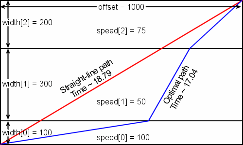

Problem Statement |
| | This problem statement contains an image.
You are responsible for planning the operation of a remote control rover that is exploring a distant planet. Your team of scientists has identified a target of interest, and they want the rover to reach it as soon as possible. The rover can change directions in a negligible amount of time, but its maximum speed is dependent on the terrain it is traversing. Consider a rectangle with the rover's initial position and the target at opposite corners (the target is close enough that the curvature of the planet's surface can be neglected), as displayed in the example below. The rectangle is divided into parallel strips of terrain with different widths, and each strip has its own limit on the maximum speed of the rover. Your goal is to find the route that will minimize the travel time to the target.

Example 0: The rover starts in the lower left corner and the target is in the upper right. Covering more horizontal distance in the thin strip where the maximum speed is high yields a shorter total travel time compared to the shortest-path time.
Write a class RemoteRover with a method optimalTravel that takes a vector <int> width containing the widths of each strip, a vector <int> speed containing the maximum speeds of the rover in each strip, and an int offset that is the distance parallel to the strips the target is offset from the rover's initial position, and returns the minimum amount of time it will take for the rover to reach the target. |
Definition |
| | | Class: | RemoteRover | | Method: | optimalTravel | | Parameters: | vector <int>, vector <int>, int | | Returns: | double | | Method signature: | double optimalTravel(vector <int> width, vector <int> speed, int offset) | | (be sure your method is public) |
|
| |
|
Notes |
| - | A return value with either an absolute or relative error of less than 1e-9 is considered correct. |
Constraints |
| - | width will contain between 1 and 50 elements, inclusive. |
| - | speed will contain between 1 and 50 elements, inclusive. |
| - | width and speed will contain the same number of elements. |
| - | Each element of width will be between 1 and 10000, inclusive. |
| - | Each element of speed will be between 1 and 1000, inclusive. |
| - | offset will be between 0 and 10000, inclusive. |
Examples |
| 0) | |
| | {100, 300, 200} | {100, 50, 75} | 1000 |
| Returns: 17.042083785318038 | | The example from the problem statement. |
|
|
| 1) | |
| | {1155, 6184, 2783, 7540, 8156} | {570, 810, 875, 172, 642} | 0 |
| Returns: 69.38271426584203 | | An offset of 0 means the target is directly across the strips from the initial position, so there is no reason to deviate from a straight path. |
|
|
| 2) | |
| | | Returns: 223.60679774997894 | | The shortest and quickest path here is a straight line to the target. |
|
|
| 3) | |
| | {9033, 8232, 8842, 6518, 2358, 1115, 941, 928, 220, 8460} | {50, 50, 50, 50, 50, 50, 50, 50, 50, 50} | 10000 |
| Returns: 954.1368054948935 | | The speed limits in each of the strips are identical, so they might as well be a single wide strip. |
|
|
| 4) | |
| | {9236, 7065, 2283, 506, 6432, 9812, 3133, 1397, 7052, 3729,
2556, 9954, 1367, 6440, 5141, 3091, 2879, 1346, 7080, 1036,
7503, 7775, 433, 7579, 6520, 2287, 1971, 3879, 1725, 8200,
1830, 2774, 3850, 7509, 8531, 7493, 1511, 9399, 9679, 2124,
791, 3432} | {956, 799, 481, 194, 993, 444, 571, 986, 815, 910,
98, 847, 650, 487, 419, 434, 410, 812, 374, 751,
307, 134, 134, 955, 758, 73, 932, 360, 135, 588,
218, 936, 674, 494, 157, 556, 881, 292, 851, 890,
886, 912} | 9756 |
| Returns: 501.6129192127166 | |
|
This problem statement is the exclusive and proprietary property of TopCoder, Inc. Any unauthorized use or reproduction of this information without the prior written consent of TopCoder, Inc. is strictly prohibited. (c)2003, TopCoder, Inc. All rights reserved.